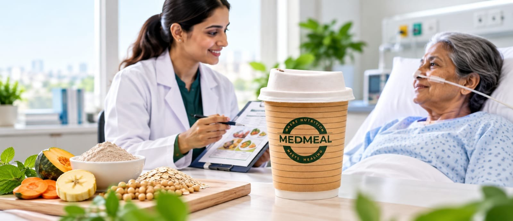
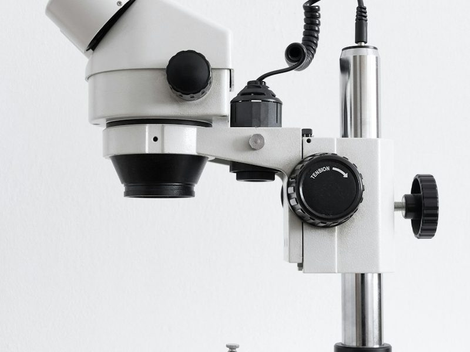
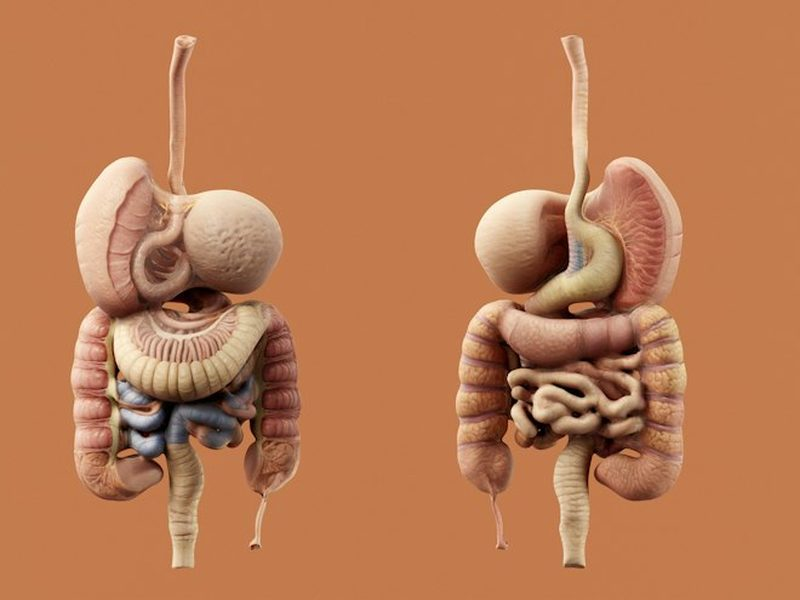
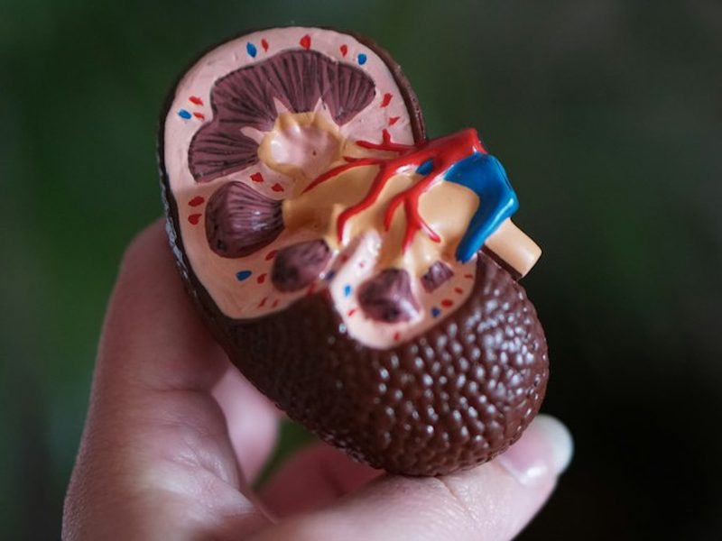
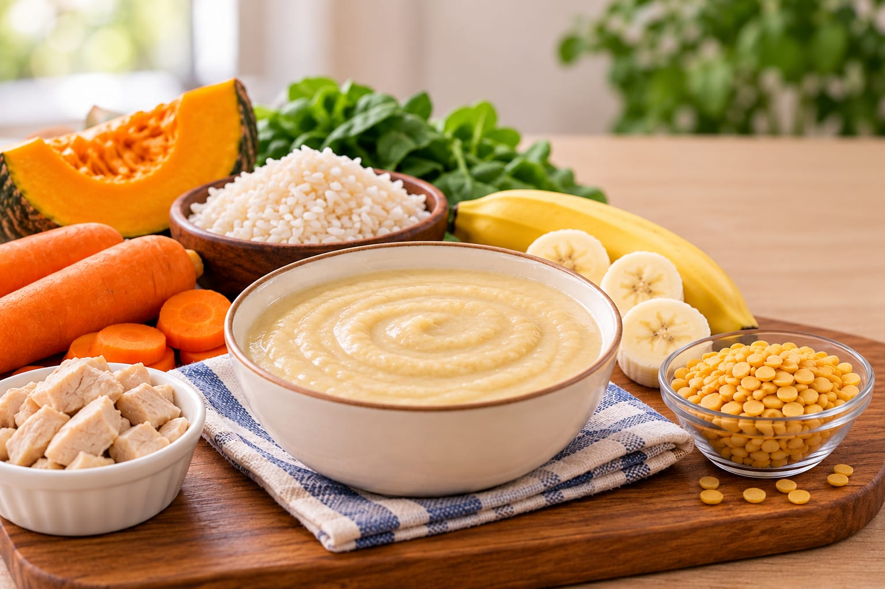
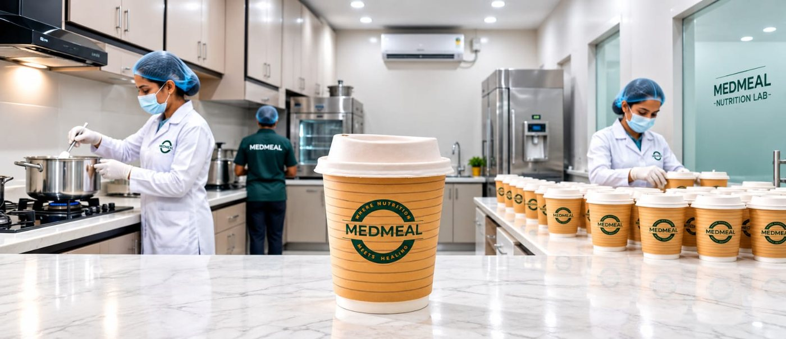
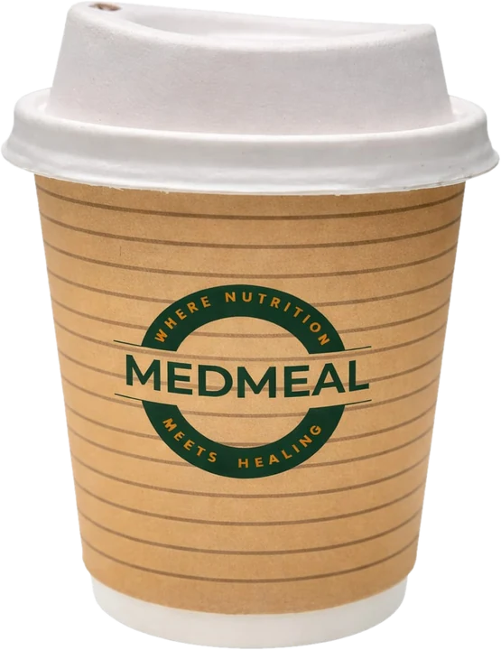

Clinical nutrition service in Vijayawada
Tube feeding nutrition
for patients
Dietitian-guided feeds for RT and PEG patients, delivered to homes and hospitals.
Feeds for every health need
Choose the feed type that fits the patient.





How it works
Five simple steps, from assessment to your door.

- 01
Understand
We learn the patient's condition and feeding route.
- 02
Plan
A dietitian plans the feed.
- 03
Prepare
Made in our specialized Nutrition Lab.
- 04
Pack
Packed in disposable, biodegradable cups.
- 05
Deliver
To your home or hospital, with ongoing support.
Plans
Pick a plan length. A dietitian will help you choose.
Daily
For short-term nutrition support.
- Dietitian-guided feeds
- RT and PEG feeds
- Delivered to your door
15-Day
For ongoing support.
- Dietitian-guided feeds
- RT and PEG feeds
- Delivered to your door
Monthly
For longer-term support.
- Dietitian-guided feeds
- RT and PEG feeds
- Delivered to your door
*Price can change with the patient's needs, the feed and the location.
Tube feeding, explained
What is tube feeding?
Tube feeding is a way to give food and nutrition through a thin tube when a person cannot eat enough by mouth.
What is an RT (Ryles) tube?
An RT tube, also called a Ryles tube, goes through the nose into the stomach. It is used to give feeds when a doctor advises it.
What is PEG feeding?
PEG is a feeding tube placed through the skin of the belly into the stomach. Feeds go straight into the stomach through this tube.
Does MedMeal deliver tube feeding food to homes in Vijayawada?
Yes, we deliver within our service areas. Call or message us to check that we can reach your address.
Can hospitals and care centres work with MedMeal?
Yes. Hospitals, rehab centres and care teams can send us an enquiry about feeds and delivery.

Need nutrition support
for a patient?
Talk to the MedMeal team about the patient's feeding needs.